Unidad 1
Contenidos de la unidad
Tres sesiones. La práctica se hace en equipo al final de la unidad y se defiende ante la clase. La prueba se explica en clase.
Resultado de aprendizaje 1
Qué vas a saber hacer
Reconocer una innovación y explicar qué la hace innovación
Y clasificarla: por área, por impacto y por objetivo.
Explicar por qué innovar hace a una empresa más competitiva
Por costes o por diferenciación.
Comparar innovaciones de sectores distintos
Una fábrica, una app, un hospital, un campo y un supermercado.
Decir qué aporta una innovación a la sostenibilidad de la empresa
Que dure, y que dure sin hacer daño.
Son los cuatro criterios de evaluación del RA1 (ORDEN EDU/411/2025), en nuestras palabras.

Pregunta a la clase
¿Qué es innovar?
Una frase cada uno. Después comparamos con lo que dice el diccionario y con lo que dice la estadística oficial.
Respuestas típicas
- ●"Inventar algo". Casi: inventar es crear algo que no existía. Si se queda en el laboratorio, no es innovación.
- ●"Usar tecnología". No siempre: cambiar cómo se vende o cómo se organiza el trabajo también es innovar.
- ●"Hacer algo nuevo". Falta lo importante: que llegue a alguien que lo use y lo valore.
Qué es innovar
De la idea al mercado: tres palabras que no son lo mismo
Descubrimiento o invención
Algo nuevo que ahora existe: un material, un algoritmo, una pantalla que responde al dedo.
Tecnología
La herramienta que lo hace posible y repetible: el hardware y el software de la pantalla táctil.
Innovación
Llega al mercado o se usa en la empresa, y alguien lo valora: el teléfono sin teclado de 2007 que la gente compró.
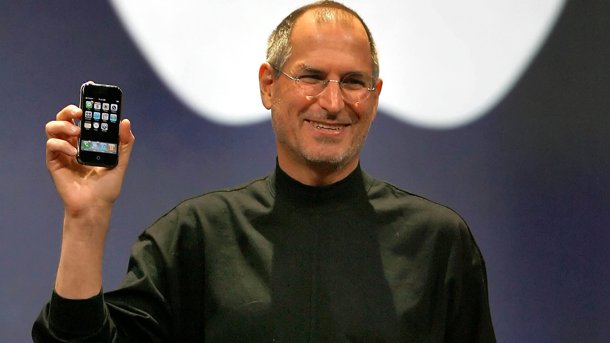
Steve Jobs presenta el iPhone, San Francisco, 9 de enero de 2007. Foto: Tony Avelar / AFP / Getty Images, vía History.com. © Uso educativo.
Qué es innovar
Innovación frente a tecnología
La tecnología es la aplicación práctica del conocimiento para crear herramientas. La innovación es convertir una idea en un producto, servicio o proceso que llega al mercado o se usa en la empresa. Se necesitan, pero no son lo mismo.
- —Hay innovación sin tecnología nueva: un modelo de negocio, una forma de organizarse
- —Hay tecnología sin innovación: un prototipo que nadie llega a usar
- —Una nueva interfaz de móvil es la innovación; el hardware y el software que la hacen funcionar son la tecnología
Figura 1.1. Donde se solapan está la innovación tecnológica, que es la más frecuente, pero no la única. Elaboración propia.
Vídeo 1.1. Investigación, desarrollo e innovación (I+D+i). Canal ECONOSUBLIME, 2020.
Qué es innovar
Investigación, desarrollo e innovación
Anota en qué se diferencia la i minúscula de la I y la D mayúsculas. Lo comentamos al terminar.
- —Duración: 3:30
- —Se ve entero

También hay una norma técnica española que lo define
La norma UNE 166000, de gestión de la I+D+i, define la innovación como la actividad cuyo resultado son nuevos productos o procesos, o mejoras sustanciales de los ya existentes. Las empresas que certifican su gestión de la innovación usan esta familia de normas.
Qué es innovar
Por qué innovan las empresas
Detecta ineficiencias
Optimiza los procesos, ahorra tiempo y reduce costes.
Mejora la calidad
Aporta valor a productos y servicios y los distingue de la competencia.
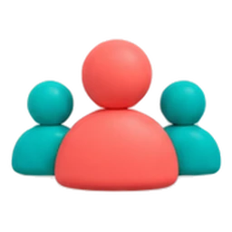
Implica a los trabajadores
Se sienten valorados y proponen ideas y soluciones.
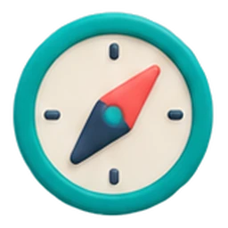
Permite adaptarse
Anticiparse a los cambios del entorno y aprovechar las oportunidades.
Qué es innovar
Innovación y competitividad
Según Michael Porter, una empresa consigue ventaja sobre sus competidoras de dos formas: siendo más barata (liderazgo en costes) o siendo distinta (diferenciación). La innovación sirve para las dos.
- —Innovar en procesos baja los costes
- —Innovar en producto o servicio te diferencia
- —Innovar en el modelo de negocio puede hacer las dos cosas a la vez
Costes
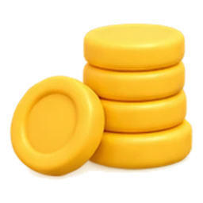
Un servicio técnico que diagnostica el equipo a distancia antes de la visita: menos desplazamientos, menos horas, precio más bajo que el de la competencia.
Diferenciación
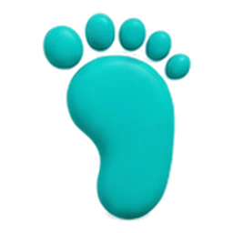
Un servicio técnico que va a domicilio en dos horas y presta un portátil mientras repara el tuyo: cobra más y los clientes lo eligen.
Qué es innovar
Innovar es una decisión de estrategia
Estrategia empresarial
El plan con el que una empresa decide qué quiere conseguir a largo plazo y qué va a hacer para lograrlo, mirando su entorno y sus propios recursos.
Es el timón de la empresa: marca el rumbo para crecer y durar en el tiempo. La misión dice qué hace y para quién; la visión, adónde quiere llegar.
Innovar no es tener ideas sueltas. Es una decisión de la estrategia: qué cambiar, para qué y cuándo, en línea con lo que la empresa quiere ser dentro de unos años.
La innovación es una estrategia de supervivencia
Las empresas que no evolucionan con lo que piden sus clientes pierden cuota de mercado y las adelantan otras más ágiles.
Sin estrategia no hay innovación
No se trata de generar ideas al azar, sino de implantar cambios en consonancia con la visión a largo plazo de la empresa. A eso el libro lo llama estrategia de innovación.
El objetivo: una ventaja competitiva que dure
Según Porter, la innovación sirve para crear y mantener ventajas sobre los competidores. Una buena estrategia busca ventajas que perduren en el tiempo, no un golpe de suerte.
En la UT3, Innovación estratégica, se ve cómo se elige la estrategia con la matriz de Ansoff.
{kind=link}
Qué es innovar
Innovación y sostenibilidad de la empresa
Una empresa sostenible es la que dura, la que se mantiene en el tiempo. Hoy, además, se le pide que reduzca su impacto en el entorno y en las personas. La innovación sirve para las dos cosas.
Que la empresa dure
Seguir siendo competitiva cuando cambian los clientes, la tecnología o la competencia. Las que no se renuevan pierden cuota y desaparecen.
Que dure sin hacer daño
Envases reutilizables, materiales biodegradables, eficiencia energética. En informática: alargar la vida de los equipos con reacondicionado y reducir el consumo de los servidores.
Tipos de innovación
Tres formas de clasificar una innovación
Tres preguntas, siempre en este orden. Una misma innovación tiene una respuesta para cada una.
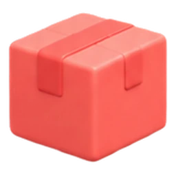
Según el área
¿Qué cambia?
- Producto o servicio
- Proceso
- Marketing y canal
- Organización
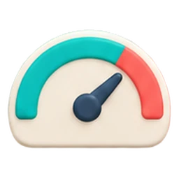
Según el impacto
¿Cuánto cambia?
- Incremental
- Radical
- Disruptiva
Según el objetivo
¿Para qué cambia?
- Tecnológica
- Social
- Ambiental
Tipos de innovación
¿Qué cambia?
El Manual de Oslo de 2018 agrupa estos cuatro tipos en dos: innovación de producto e innovación en los procesos de negocio (que incluye proceso, marketing y organización). La mayoría de los textos siguen usando cuatro. Fuente: INE, metodología de la Encuesta sobre innovación 2024.
Tipos de innovación
¿Cuánto cambia?
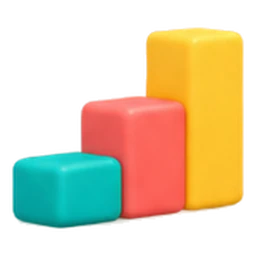
Incremental
Mejora pequeña y constante de algo que ya existe. No cambia el mercado, lo mantiene.
Ejemplo: cada versión de una app o de un móvil; Gmail añadiendo funciones año tras año.
Radical
Producto, servicio o proceso nuevo y distinto, que cambia el mercado de forma drástica.
Ejemplo: el iPhone de 2007. Los teléfonos inteligentes existían; uno sin teclado cambió el mercado.
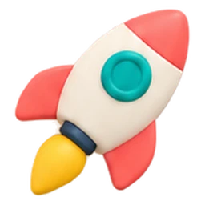
Disruptiva
Crea un modelo de negocio nuevo que desplaza al anterior y que otras empresas copian.
Ejemplo: Netflix y el streaming frente al videoclub. Blockbuster quebró en 2010.
Tipos de innovación
¿Para qué cambia?
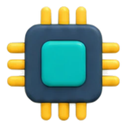
Tecnológica
Desarrolla nuevas técnicas para producir más y mejor. Ejemplo: reconocimiento facial con inteligencia artificial para controlar accesos.
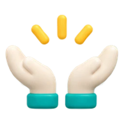
Social
Resuelve problemas de las personas y mejora su bienestar. Suele necesitar colaboración entre lo público y lo privado. Ejemplo: la consulta médica por videollamada.
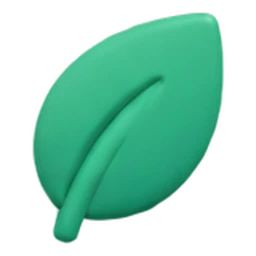
Ambiental
Cuida el medioambiente: materiales sostenibles, energías renovables, menos residuos. Ejemplo: reacondicionar equipos en vez de tirarlos.
Una misma innovación puede tener dos objetivos: un sistema de riego con sensores es tecnológica y ambiental a la vez.
Vídeo 1.2. Los tipos de innovación en la empresa. Canal ECONOSUBLIME, 2025.
Tipos de innovación
Los tipos de innovación en la empresa
Apunta un ejemplo de cada tipo que no salga en el vídeo. Lo usaremos en el ejercicio de después.
- —Duración: 5:49
- —Se ve entero
Tipos de innovación
Cómo se clasifica un caso
Tres preguntas, en orden. Si dudas en la primera, piensa en qué notaría el cliente: si nota algo distinto, es producto o servicio; si no nota nada pero la empresa trabaja distinto, es proceso u organización.
Mercadona pone inteligencia artificial a leer las facturas de sus proveedores y a planificar las vacaciones del personal (2025).
- ¿Qué cambia?Tareas internas de administración: proceso (también vale organización).
- ¿Cuánto cambia?Mejoras paso a paso sobre lo que ya hacía: incremental.
- ¿Para qué cambia?Para producir más y mejor con nuevas técnicas: tecnológica.
Fuente: El Español, entrevista al director de tecnología de Mercadona, 15/12/2025.
Clasifica la innovación
Un caso al azar y tres desplegables. Pulsa Comprobar para corregir, Pista si te atascas y Otro ejercicio para seguir practicando.
Algunos casos admiten dos respuestas en un desplegable; Resolver te dice cuáles.
El proceso y las oportunidades
De la idea al mercado, en siete etapas
Identificar oportunidades
¿Qué demanda el entorno? Nuevas preferencias, productos sustitutivos, procesos anticuados.
Generar ideas
Muchas y variadas, con técnicas como la lluvia de ideas o SCAMPER (UT3).
Evaluar y seleccionar
Quedarse con las relevantes y factibles: riesgos, público, estudios de mercado.
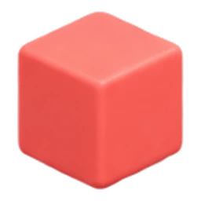
4Definir el proyecto
Coste, rentabilidad, problemas previsibles. Ningún prototipo sale sin probarse.
Poner en práctica
Un documento con acciones, fechas y costes; pruebas en escenarios reales y encuestas.
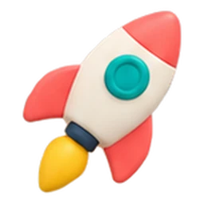
6Implantar
El lanzamiento al mercado, con una estrategia de marketing que diga por qué esto resuelve lo del paso 1.
Supervisar
Medir, ajustar y aprender. La innovación no es un proceso aislado: vuelve a empezar.
La primera etapa condiciona todo lo demás: un problema mal definido lleva a ideas que no sirven, por buenas que sean.
Prototipo
Representación de una idea de innovación, o modelo experimental de un producto o servicio, que se usa para comprobar y evaluar si funciona antes de ponerlo en marcha.
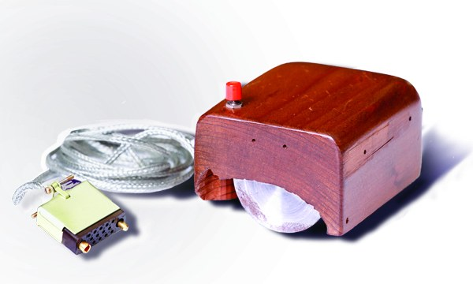
Grupo focal
Reunión de un grupo de personas, normalmente desconocidas, para conocer su opinión sobre un prototipo, un producto o un servicio.
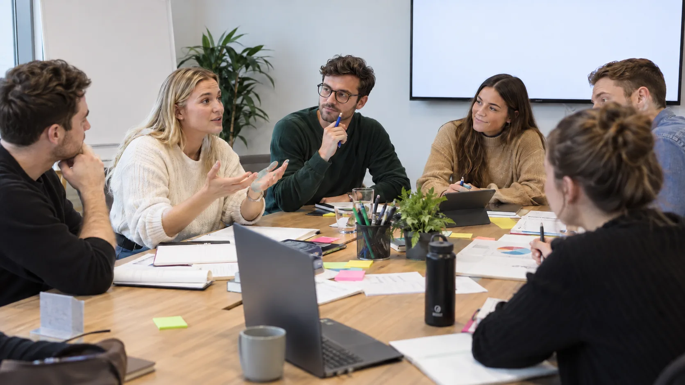
El proceso y las oportunidades
Las siete fuentes de oportunidad de Drucker (1-4): dentro del sector
Según Peter Drucker, las innovaciones que tienen éxito no suelen nacer de una idea genial repentina, sino de buscar oportunidades de forma sistemática. Las cuatro primeras fuentes están dentro del sector en el que trabaja la empresa.
1. Sucesos inesperados
Un éxito o un fracaso que nadie esperaba, dentro o fuera de la empresa.
Una app para empresas se hace viral entre estudiantes: sale una versión para ellos.
2. Incongruencias
La diferencia entre lo que es y lo que debería ser, o lo que todos suponen que es.
Los clientes piden más funciones, pero solo usan tres: alguien lanza una app minimalista.
3. Necesidades de un proceso
Un punto débil que todos sufren y nadie arregla.
Los técnicos pierden una hora al día con partes en papel: una app de partes desde el móvil.
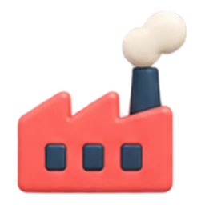
4. Cambios en la industria y el mercado
El sector cambia de repente y abre huecos.
El streaming hunde el DVD: los videoclubes que sobreviven se reconvierten.
El proceso y las oportunidades
Las siete fuentes (5-7): en el entorno
Las tres últimas fuentes no están en el sector, sino en la sociedad que lo rodea. Cambian más despacio, pero sus efectos son más amplios y duraderos.
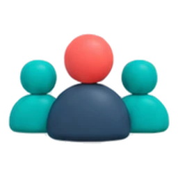
5. Cambios demográficos
Edad, población, dónde vive la gente, nivel de estudios, renta.
En los pueblos de Castilla y León hay cada vez más mayores de 65 años: asistencia informática a domicilio para mayores.
6. Cambios en la percepción
Cambia cómo la gente ve las cosas, aunque las cosas sigan igual.
El ordenador pasó de herramienta de trabajo a objeto de casa. Hoy la inteligencia artificial pasa de ciencia ficción a asistente diario.
7. Nuevos conocimientos y tecnología
Un avance científico o técnico abre productos y mercados nuevos. Es la fuente más conocida, aunque no la más frecuente: entre el avance y el producto suele pasar tiempo.
Un modelo de IA transcribe llamadas en tiempo real: una operadora lo mete en su telefonía de empresa.
El proceso y las oportunidades
Cómo se empareja una fuente con un caso
La regla: pregúntate de dónde vino la oportunidad, no en qué consiste la innovación. Una misma innovación (una app) puede venir de fuentes distintas.
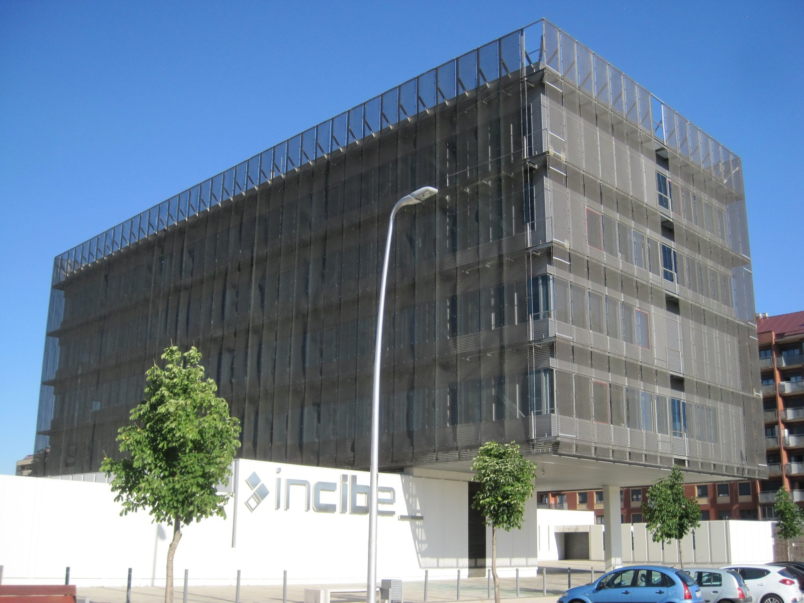
Un organismo público de ciberseguridad se instala en León y crea cientos de empleos tecnológicos donde antes no los había. A su alrededor nacen empresas y cursos de ciberseguridad.
- ¿Qué pasó antes?Una decisión pública que nadie del sector esperaba: suceso inesperado.
- ¿Qué hueco abre?Hacen falta profesionales formados en ciberseguridad en León: necesidad de un proceso para las academias y centros de FP.
- ConclusiónDos fuentes válidas según lo que mires. En el ejercicio, cada caso está escrito para que destaque una.
Empareja fuente y oportunidad
Siete casos, siete fuentes, una para cada uno. Comprobar corrige, Pista resuelve uno y Otro ejercicio cambia de juego.
El proceso y las oportunidades
De dónde saca ideas una empresa
Ejemplo: una empresa de servicios informáticos quiere añadir inteligencia artificial a su soporte técnico.
Startup
Empresa de reciente creación y de base tecnológica.
RAE, Diccionario panhispánico del español jurídico.
Fuentes internas
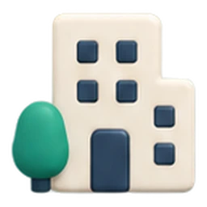
- El equipo técnico y de desarrollo (I+D)
- Los datos de uso de los clientes
- La formación del personal
- Una cultura que anima a proponer
Fuentes externas
- Clientes y proveedores
- Centros de investigación y universidades
- Competidores
- Startups con las que colaborar
El proceso y las oportunidades
Innovación abierta: las ideas también vienen de fuera
Innovación abierta
Usar a propósito ideas y conocimiento de fuera de la empresa, y dejar salir los propios, para innovar más rápido y más barato.
Henry Chesbrough, Universidad de California en Berkeley, 2003.
Ninguna empresa tiene dentro a toda la gente lista que necesita. Colaborar con clientes, universidades, startups, proveedores y hasta competidores es hoy la forma normal de innovar.
Innovación cerrada
Todo se hace en el laboratorio propio: I+D interno, en secreto, y el producto sale cuando está listo. Modelo de las grandes empresas del siglo XX.
Innovación abierta
- Colaborar con universidades, centros de investigación y startups
- Comprar y vender licencias y patentes
- Concursos de ideas y comunidades de usuarios
- Desarrollar con los clientes, no solo para ellos
Tres ejemplos de esta unidad. Inditex invierte en una startup de robótica en vez de fabricar sus robots. Marsi Bionics nace del CSIC y prueba su exoesqueleto en hospitales públicos. Lego Ideas: los aficionados proponen sets y Lego fabrica los que reúnen 10.000 votos.
Sectores y sostenibilidad
Qué cambia la innovación en un sector
Los efectos de la innovación son los mismos en todos los sectores. Lo que cambia de un sector a otro es la escala, la velocidad y el coste.
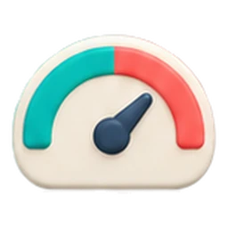
Eficiencia
Menos tiempo, menos desperdicio, mejor uso de los recursos. Una fábrica que produce un 20 % más con la misma gente.
Calidad y sostenibilidad
Productos que duran más, materiales mejores, menos impacto ambiental. Un cultivo que gasta la mitad de agua.
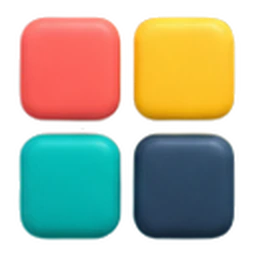
Diversificación
Nuevos productos, nuevos clientes, nuevos mercados. Un fabricante de impresoras que vende también software y servicios.
Sectores y sostenibilidad
Cinco innovaciones, cinco sectores
Pulsa cada caso para ver su foto. ¿Qué tienen en común? ¿En qué se diferencian?
Informática · HP en León (2025)
Unos 250 ingenieros desarrollan el firmware de las impresoras de gran formato de HP. Producto.
Automoción · Horse en Valladolid (2026)
45 millones de euros en una línea de culatas para motores híbridos: un 20 % más de producción. Proceso.
Sanidad y cuidados · Marsi Bionics (2026)
El primer exoesqueleto infantil del mundo, nacido del CSIC; Sacyl tiene seis. Lo vemos en el vídeo siguiente. Producto.
Distribución · Mercadona (2025)
250 millones de euros hasta 2028 para rehacer sus 300 aplicaciones, con 1.200 informáticos propios. Organización.
Agricultura · John Deere, See & Spray (2025)
Cámaras e inteligencia artificial en el pulverizador: solo se fumiga donde hay mala hierba. Dos millones de hectáreas en 2025 y la mitad de herbicida. Producto.
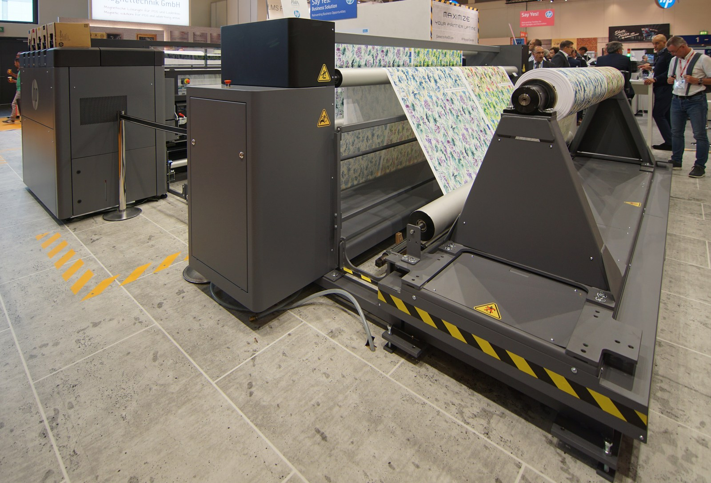
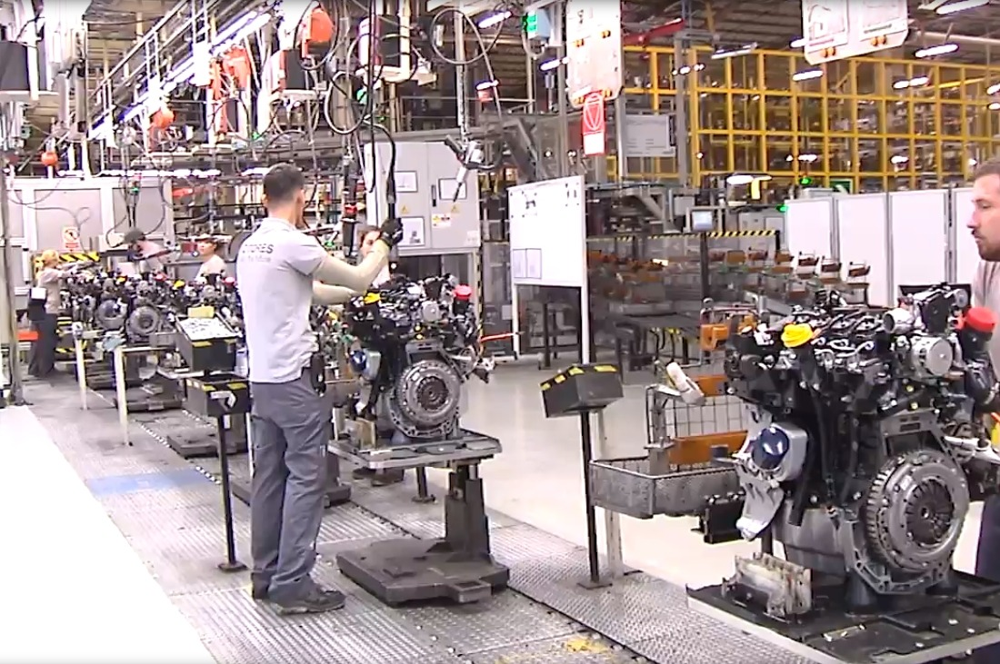
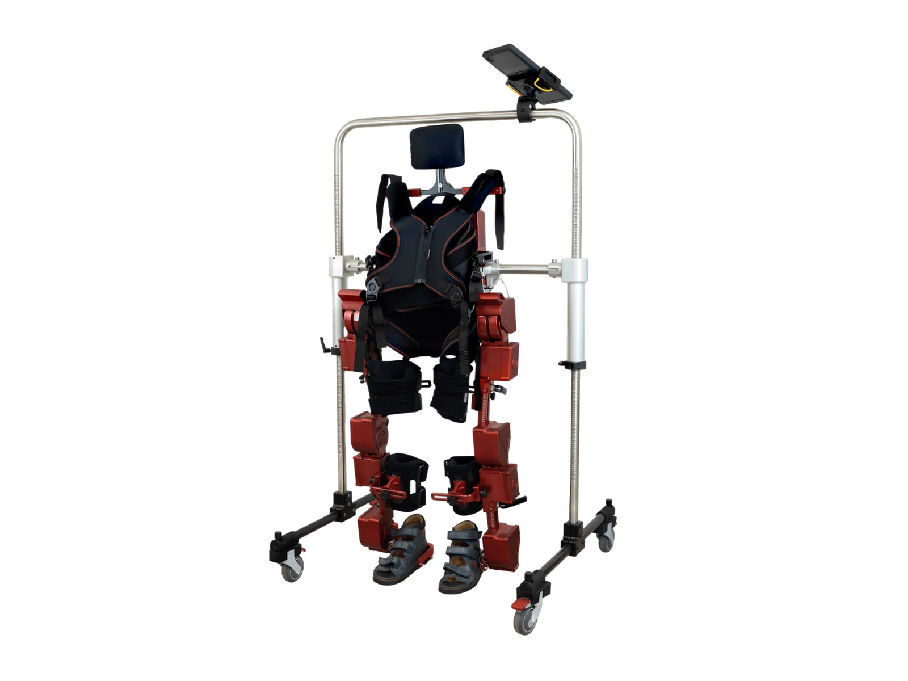
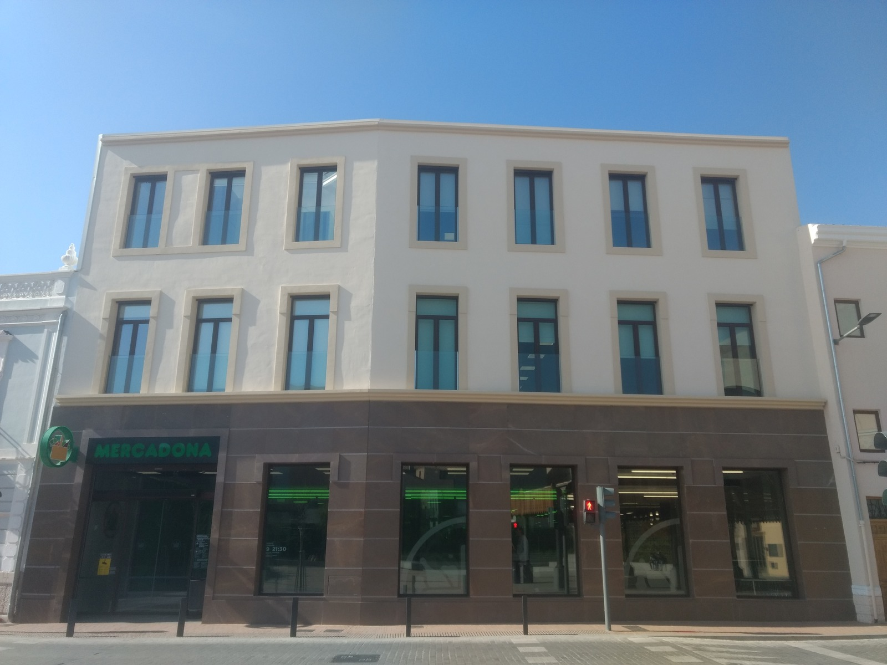
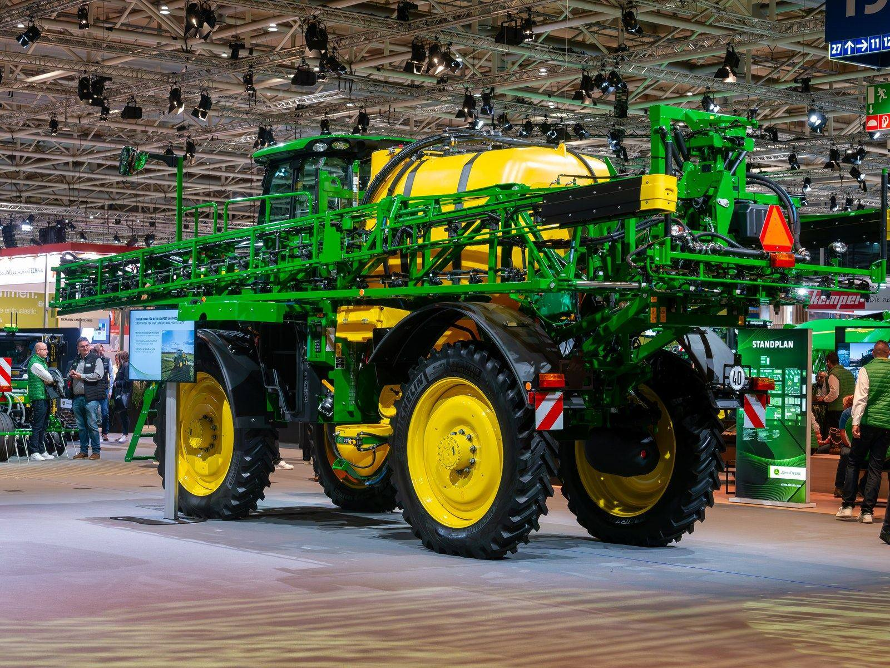
Vídeo 1.3. ATLAS 2030: el primer exoesqueleto pediátrico del mundo. Canal de Marsi Bionics, 2026.
Sectores y sostenibilidad
Innovar en los cuidados: el exoesqueleto de Marsi Bionics
Empresa nacida del CSIC y fundada por una ingeniera de Valladolid. Su exoesqueleto permite andar a niños con parálisis cerebral o atrofia muscular; el Clínico de Valladolid tuvo el primero de la sanidad pública. Mientras lo ves, responde: ¿qué tipo de innovación es, según el área y según el objetivo? ¿De cuál de las siete fuentes de oportunidad viene?
- —Duración: 2:57
- —Se ve entero
Pregunta a la clase
¿Se innova igual en una fábrica que en una app?
Pensad en la fábrica de Horse y en una oficina de programadores como la de PLD Space: ¿qué cuesta más, qué va más rápido, qué tipo de innovación es más frecuente en cada una?
Ideas
- ●En la fábrica la innovación suele ser de proceso, cara y lenta: maquinaria, obras, formación. Se decide una vez cada muchos años.
- ●En el software suele ser de producto, barata y rápida: una versión nueva cada pocas semanas. Se prueba y se corrige sobre la marcha.
- ●En los dos casos se mide igual: si el cliente lo nota y lo valora, es innovación. Si no, es solo un gasto.
Sectores y sostenibilidad
Innovación y desarrollo sostenible
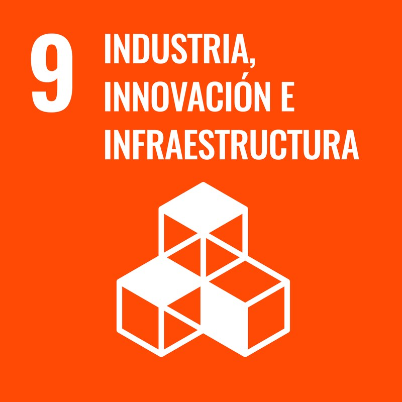
La Agenda 2030 de Naciones Unidas fija 17 objetivos de desarrollo sostenible (ODS). El número 9 es «Industria, innovación e infraestructura»: la innovación se considera una de las bases del desarrollo sostenible.
Innovación sostenible: la que produce lo mismo o más gastando menos energía, menos materiales y generando menos residuos.
Eficiencia energética: centros de datos refrigerados con menos energía y alimentados con renovables.
Economía circular: reacondicionar ordenadores y móviles en vez de fabricar y tirar.
Menos residuos: riego con sensores que gasta solo el agua necesaria; envases reutilizables.
Vídeo 1.4. Los ODS: qué son, qué pueden aportar a la empresa y cómo alinearse con ellos. Canal de FEMEVAL, 2023.
Sectores y sostenibilidad
Los ODS y la empresa
Piensa en una innovación que conozcas y elige el ODS al que contribuye. En la práctica lo haréis con vuestro caso.
- —Duración: 3:42
- —Se ve entero
Sectores y sostenibilidad
Dónde se apoya la innovación
Innovar cuesta dinero. Por eso existen ayudas públicas para las empresas que innovan, también para las pequeñas y para las recién creadas.
Castilla y León · ICE
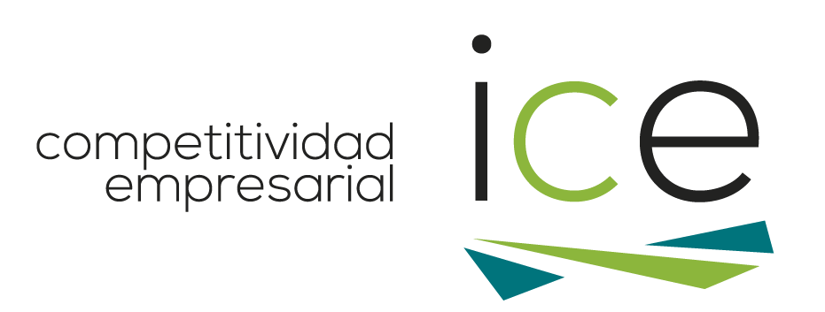
Fomento de la innovación en pymes. El Instituto para la Competitividad Empresarial paga entre el 50 % y el 70 % del coste de asesorarse e implantar una solución de innovación. Convocatoria de 2026.
España · CDTI
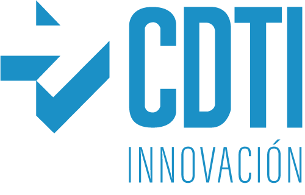
NEOTEC. Para empresas de base tecnológica de menos de tres años: hasta el 70 % del presupuesto, con un máximo de 250.000 euros. Convocatoria de 2026.
Éxitos y fracasos
Lo que se repite en los éxitos y en los fracasos
Éxito
- Conexión con el mercado y con los clientes: se sabe para quién es
- Varias soluciones probadas antes de elegir una
- Talento y colaboración del equipo, dentro y fuera de la empresa
Fracaso
- Poca orientación al mercado: no se entendió qué quería el cliente
- Sin evaluación económica y técnica antes de empezar
- Sin aprobaciones ni control durante el desarrollo
Éxitos y fracasos
Dos éxitos: uno de ayer y uno de hoy
Netflix. Del DVD por correo al streaming, y del streaming a producir sus propias series según lo que ven sus usuarios. Producto, servicio y canal, siempre siguiendo al cliente.
Inditex, 2025. Invierte en una startup de robótica logística con inteligencia artificial y estrena un alarmado que integra la tienda con la venta online. Proceso y canal, con colaboración externa.
Éxitos y fracasos
Dos fracasos: uno de ayer y uno de hoy
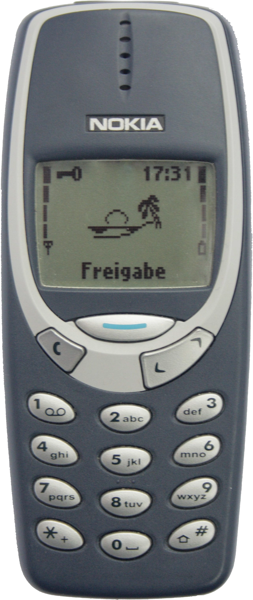
Nokia. Líder mundial de la telefonía móvil en los años 90, centrada en el hardware. Llegó tarde a los teléfonos sin teclado tras el iPhone de 2007 y perdió el mercado en pocos años. Poca orientación al mercado.
Humane AI Pin, 2024-2025. Un aparato con inteligencia artificial que quería sustituir al móvil, por 699 dólares. En febrero de 2025 vendió sus activos a HP y los dispositivos dejaron de funcionar. Una solución en busca de problema: no hacía nada mejor que el móvil.
Vídeo 1.5. Empresas que no innovaron: Blockbuster, Kodak, Nokia y Yahoo. Canal TEC, 2022.
Éxitos y fracasos
Cuatro empresas que no innovaron
Blockbuster, Kodak, Nokia y Yahoo. ¿Cuál de las tres causas de fracaso de la tabla le cuadra a cada una? Argumenta con algo que salga en el vídeo.
- —Duración: 6:25
- —Se ve entero
Éxitos y fracasos
Cómo se analiza un caso
Google Glass (2013-2015): gafas con una pantalla que proyecta información delante del ojo, cámara y control por voz. 1.500 dólares. Retiradas del mercado dos años después de salir.
- Qué prometíaTener el móvil delante del ojo sin usar las manos.
- Por qué fallóMiedo a ser grabado por la calle, precio alto, manejo complicado y ningún uso claro.
- PautaPoca orientación al mercado: no se entendió qué quería, ni qué rechazaba, la gente.
Figura 1.7. Google Glass. Haz clic en la foto para verla en grande.
¿Por qué fracasó? ¿Por qué funcionó?
Lee el caso y elige la pauta de la tabla que mejor lo explica. Comprobar corrige y, si aciertas, muestra la respuesta razonada con su fuente.
Analiza una innovación real
En equipos de 3 o 4, buscad una innovación reciente de una empresa de vuestro sector, analizadla con lo visto en la unidad y presentadla a la clase. Al exponer, añadid vuestra fila a la tabla de la clase para comparar los sectores.
El caso tiene que ser
- •Una empresa con nombre, de un sector concreto
- •Algo introducido en 2025 o 2026
- •Con una fuente que lo cuente: noticia, nota de prensa o web de la empresa
- •Que no haya salido en esta unidad
Dónde buscar: la prensa de la provincia, la web de la empresa, la Junta y el ICE, o lo que hayáis visto en vuestras prácticas.
Entrega
Presentación de siete diapositivas, en Classroom
Exposición
Cinco minutos y una pregunta
Las siete diapositivas
- 1.La innovación: empresa, sector, imagen y fuente con fecha
- 2.Qué es lo nuevo y para quién, y por qué es innovación y no solo tecnología
- 3.De qué tipo es: área, impacto y objetivo, y por qué
- 4.Qué ventaja da frente a la competencia: costes o diferenciación
- 5.De qué fuente de oportunidad nace, y si la información vino de dentro o de fuera
- 6.Qué aporta a la sostenibilidad de la empresa y a qué ODS contribuye
- 7.Qué pauta de éxito cumple o qué pauta de fracaso arriesga
Cómo se puntúa la práctica
5
Caso válido, con fuente e imágenes
25
Contenido de las siete diapositivas: bien clasificado y justificado
15
Exposición clara en cinco minutos
5
Respuesta a la pregunta y fila en la tabla de la clase
10
Actitud: participar, escuchar y preguntar a los demás equipos
Sesenta puntos de los cien de la unidad. Los otros cuarenta son la prueba, que se explica en clase. La inteligencia artificial puede ayudaros a buscar; lo que se puntúa es lo que explicáis y defendéis vosotros.
Unidad 1
Resumen de la unidad
Innovar es llevar un producto o un proceso nuevo o mejorado al mercado o a la empresa. No basta con inventar.
Se clasifica con tres preguntas: qué cambia (área), cuánto cambia (impacto) y para qué cambia (objetivo). La mejora continua es la innovación incremental hecha sistema.
Innovar es una decisión de estrategia: hace a la empresa más competitiva, por costes o por diferenciación, con una ventaja que dure en el tiempo, y más sostenible: daña menos.
Las oportunidades se buscan a propósito en siete fuentes: cuatro dentro del sector y tres en el entorno.
Los fracasos se repiten: sin cliente, sin evaluación previa y sin control. Los éxitos también: conexión con el mercado, varias soluciones probadas y equipo.
Para ampliar
Recursos y fuentes
- DefinicionesRAE, Diccionario de la lengua española, «innovación» e «innovar». INE, Encuesta sobre innovación en las empresas 2024, metodología (Manual de Oslo 2018). Mejora continua: Masaaki Imai, Kaizen (1986). Innovación abierta: Henry Chesbrough, Open Innovation (2003).
- DatosINE, Encuesta sobre innovación en las empresas 2024 (18/12/2025) y Estadística sobre actividades de I+D 2024 (20/11/2025). Comisión Europea, European y Regional Innovation Scoreboard 2025. Junta de Castilla y León, Innovación en las empresas 2024. John Deere, resultados de See & Spray en 2025 (10/11/2025).
- AyudasICE de Castilla y León, empresas.jcyl.es. CDTI, programa NEOTEC, cdti.es.
- VídeosECONOSUBLIME: I+D+i (youtu.be/OfsekEabQ4o) y tipos de innovación (youtu.be/ZFk7KKLuJM8). Marsi Bionics: ATLAS 2030 (youtu.be/aWEgRQrCFW0). FEMEVAL: los ODS y la empresa (youtu.be/1aP0D5m6N_w). TEC: empresas que no innovaron (youtu.be/mWyAk8dsTas). Opcional: Ministerio de Derechos Sociales, ODS 9 (youtu.be/QtQ8a5D0i3g).
- NormativaORDEN EDU/411/2025, de 15 de abril, currículo del módulo CL32.